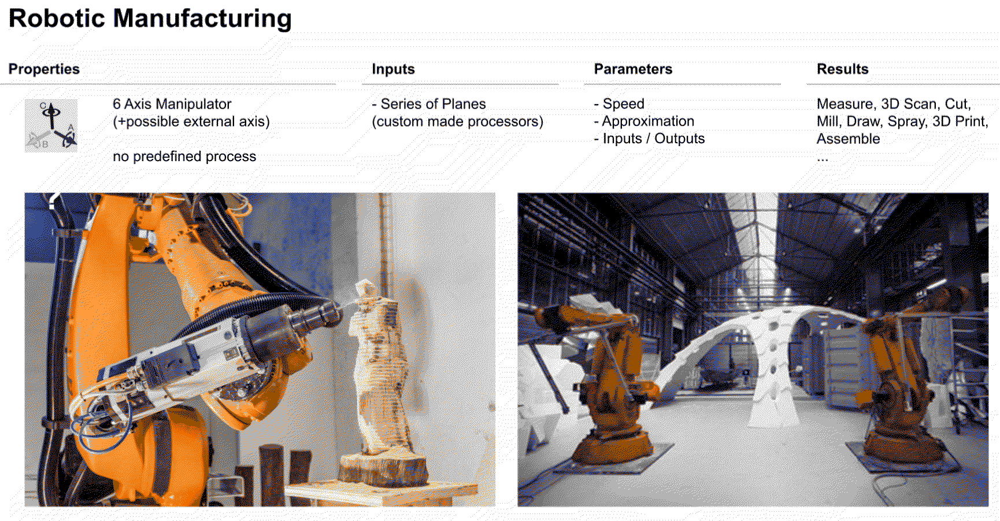
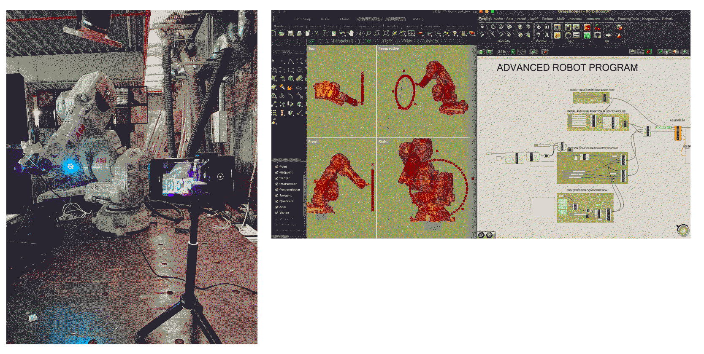
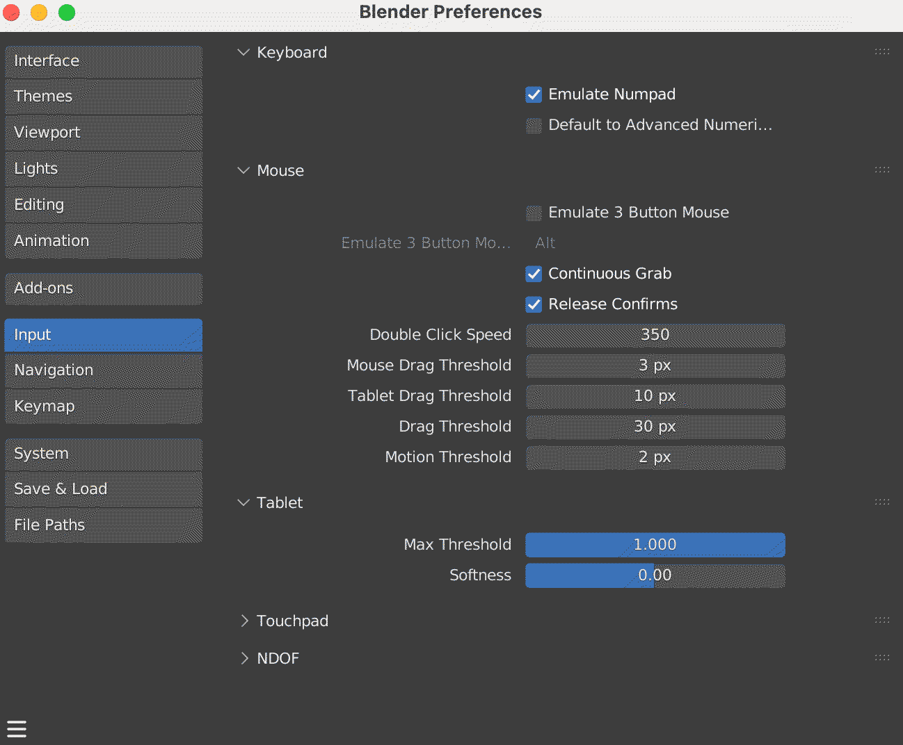
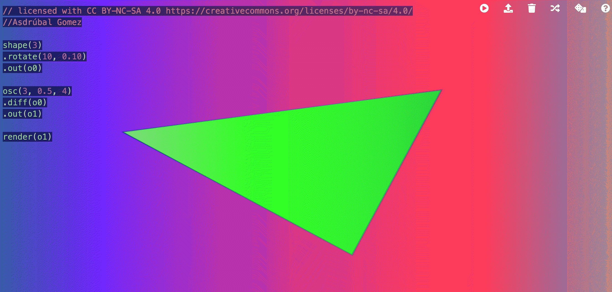
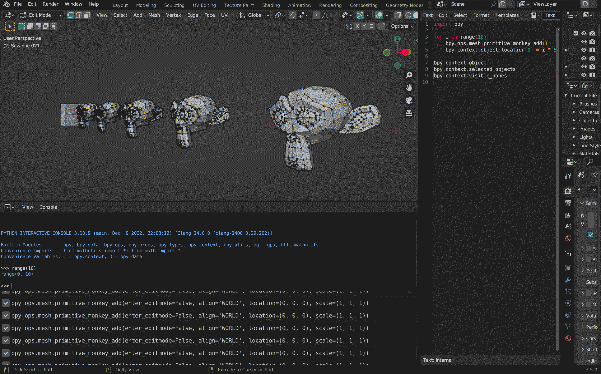
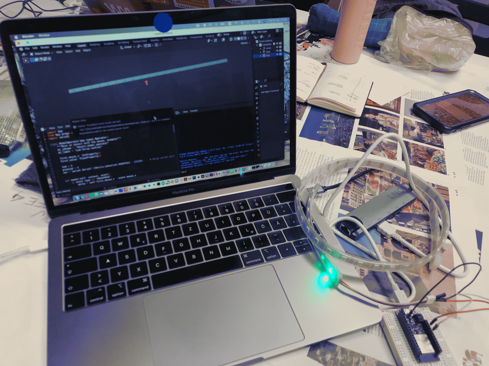

¶
🗓 Week 24 - / 19 april - 2023
prototyping for design
with Josep, Victor
robots¶
19. april with Josep
we talk about robotic hands.
how many axis? what are thee degrees of freedom?

there are many types of robots on which robotic arms are only one. there are systems, drones, terrestrial autonomous and custom autonomous robts as well as thosee that work with cables. A robot works in linear and in joint-movements. The latter which is the more easy one for the robot and whith which we can just point our a point in space and the and of the arm ( the extruder) will move there. The robot we have at IAAC moves on 7 different dimensions, which can be counted by its amount of joints.
If working with our IAAC robot, we have to install plug ins to our softwares (e.g. rhino & grasshopper) that help us calibrate and set up the robots we want to use… Josep provides us with some templates that we thus try out and play around with.

blender¶
20. april with Victor
what is the best tool for the job you want to do? the thing is, in digital work you often do not really know what to do. So therefore the digital tool can be a guidance and interesting inpiraton to change the process of your work. e.g. if an image-tool has 100 filters, you will try out various options which will make your work. Blender is a free and open source 3D creation suit that is often used for animation-making and movies. During this session Victor (once again) brought us closer to the complex interrelationships of business, the open-soource world and the user and their creations. He summarized how the tools we choose force us towards determined paths - and that good and open-source softwares should allow us to determine and explore by ourself if we put the time and effort to grasp them. We are thus dependant on that which is available to us within these choices.
A bit of history before we get to know how to use blender.
decisions! we depend on the choices the software allows us to make. ARE WE? if we are designers and want to call us as such, we should know the software we use till the point that we can modify and use it with freedom and creativty. Otherwise, we are just “techhnical operaters” of a system that makes you.
About blender:
In 1994 the first source file was written. This wass the inspiration for the in 2002 creation of “Blender”. Ton Roosendaal was one of the founders and his keynote speach is exceptionally interesting (according to Victor - fanboy). Blender is a open sourcec software - meaning, there are rules of how to use, modify and distribute source files according to the standards of the open source concept. The open source initiative does make the rules and gives out licenses. Thus as a free alie (if I download the source file and I modify and distribut it) has to apply to the rule and publish the modified verssions under the same conitions.
Because it is opensource, all money generated with the software, is being distributed to of people and not centralized and concentrated in one company. The question the remains how to design a profitable bussinesss-moodel for such a platform? Blender has a movie concept in which they collaborate with visual artists to release (cinema) movies with which they earn money.
How to work with blender.
the user-interface of blender is a bit strage because it is not built to SELL the software but to work on things together. The user-interface thus is a bit more complicated. this tool is not to make to learn-by-doing in an intuitive way. If considering using blender seriously, I will need to read the extensive manuals available. As an example, in blender everyone can create their own “tool-board”, their own windows that will be designed according to each projects need. Blender has a mode-editer, which means I can be in different modes in order to apply a different sets of operations to the data. That helps to transform any data into animations.

Another important thing when working with blender on mac is to enable the numpad. Because windows has a number-pad on the right side, the shortcuts do not work on a macc. If I acivate he numpad in my setings though, then the mac numbers at the top, work as the numbers at window’s right.
It is smart to learn the shortcuts as this is the way that Blender works best and most precise. Especially if you wanna scale or modify the object it is suggested to use the keyboard and not the mouse/ trackpad!
For that it is handy to check the manuals and check the one for the short-cut operations. In the end I have data, actions and interfaces. A cube is a specific amount of data. And there are interfaces (in terms of comments) that trigger actions but each operation needs to be linked to a set of data. Everyhings works a bit different (to simpel IOS interfaces) in Blender: I click to select and then I apply the action via a command. And then I confirm that action. This is all because the Blender-software was not designed to be sold, but designed to be used. Good job Victor, I love blender already - yet I am not sure how and where to use it because animation is really nt my thin and by now I have learned Rhino too well t switch my 3D moodelling software.
live coding as a human interface¶
26. april with Xavi Domínguez aka er Lunni and Citlali Hernández aka Turbulente
we are working with a hackmd to follow back the references and handy links. Xavi introduces us first into the wide and complex world of what digtal/human interface entails and what it means to make data interact and translate into various forms.
what language to use? This german collective collected all language for interefaces in which I can learn and understand.
having experiences already IFTTT connects various services with each other. Thus for example can I gather data with certain sensors and arduino and then connect via IIFTTT to something like a map or google-sheet or other digital data interfaces.
langchain is a python framework for interfaces (like text to speech)
then, Citlali from Mexico presents us her work of live coding before we get to try things ourselves. As one example did Citlali created a second skin which she wore during a performance in which online webcam watchers could leave comments and likes which would be translated into senses that the second skiin would translate to her moving. Here, she used a Rasberry P and a text to speech tool to make the skin read her out loud some of the comment and feel likes via vibrations.
so what is live coding?
“show us your screens!”
The intention is to share the code all the time. It appeared n the DJ cene when seeing DJs live-mixing and sharing theiir screens for everyone to see what they are actually doing. There is a live coding community in Barclone Toplab, they have a agenda with all the events and are happy to share and exchange. Citlani uses live coding for visuals, images not for audio, music. In general, it allows you to improvise and play around with the codes. Another interesting live coding group is a womens collective that also plays in hangar. People are creating new languages (such as hydra by olivia) a lot and the community grows a lot. If you want to train smethinng to undnerstand your new language, you can use ssoftwares such as wekinator.
we are testing hydra which is a simple and easy-to-understand coding language. This language is a live coding video synthesiser. It is created with javascript, which is my it is workinig directly in my browser. Live so to say. As soon as I change something in the code, the backgground visuals are changing as well. Tip: change some numbers in the code and in order to “upload”, in order to activate the change in the parameter I click option+enter or the play-icon in the upper corner.

for knowing some generator-codings, she is sharing her documnt, a cheatsheet for shapes and other options. If I want to install hydra on my computer and experiment with sound and visuals, camera and microphones there, in the github there is everything documented of how to install and experiment with it.
blender 2.0 now as interface¶
27. april with Victor
when we write code, we write instruction that are being written from left to right and from up to down. This is changing, when you want things to happen parallel, simultaniously and in relation to each other. This is when we talk abut objects. Python is a language for such objects. Each object has a set of properties and methods. We create classes and instances for these objects. In python we have the main object that entails ALL possible operations = bpy.ops.mesh. In this object, all operatoins, actions that blender is capable of, are being shown. Python comes with a standard list of default options. (words that are fuctions; e.g. range()).
ok we play with mesh-monkey Suzanne and try out all the complexities. For that, we follow the code that are available in the hackmd.

ok next step. We try to use all the potential of python (victor really recommends to spend a few afternoons on python tutorials because this language is just beautiful and very handy). We want to now connect our phones to ur blender and start rotating ur suzanne-monkey by moving our phone. So for that we need to download an application that allows us to record with the sensors of our phones and send them via wifi to our python. To experiment with the sensorss no my phone I can play with phyphox and try reading and vizualizing the recordings of the sensors of the phone. It is unfortunately not useful for today because it only allows us to access our sensor-data - not to push them via wifi onto the network from which we could access the data in python.
we want to write a script that is monitoring our phone (sensors) and sents them in real time to a network.
bueno. It seems apple does not make it easy for us to access the sensors. We cannot easily find an applcation so we are followinig together on Victors android phone and the projection of the coding.
the code for making suzanne rotating by rotating the (andrid)phone. Important is to change the host and prt accrdingly.
import bpy
import socket
# Setup UDP socket
host = '192.168.0.12' # The same address of your computer
port = 5555
s = socket.socket(socket.AF_INET, socket.SOCK_DGRAM)
s.setsockopt(socket.SOL_SOCKET, socket.SO_REUSEADDR, 1)
s.setsockopt(socket.SOL_SOCKET, socket.SO_BROADCAST, 1)
s.bind((host, port))
s.settimeout(1)
# Receive data
try:
message, address = self.s.recvfrom(8192)
# Check if the data is complete (sometimes the app sends only some of the sensors)
if len(message.split(b',')) == 17:
x = float(message.split(b',')[-2]) * 0.01745
y = float(message.split(b',')[-1]) * 0.01745
z = float(message.split(b',')[-3]) * 0.01745
# print(x,y,z)
context.object.rotation_euler.x = x
context.object.rotation_euler.y = y
context.object.rotation_euler.z = z
except:
# Stop if no more data is received
self.cancel(context)
return {'CANCELLED'}
def execute(self, context):
wm = context.window_manager
self._timer = wm.event_timer_add(0.001, window=context.window)
wm.modal_handler_add(self)
return {'RUNNING_MODAL'}
Now just run the script and if everything is Ok you will see Suzanne rotating!
so with this code we made uor monkey in blender move (rotate) when we moved (rotated) victors phone. We can also uses arduino to trigger object-movement in blender.
therefore we need the arduino code. Well, I ask ChatGPT to write me a code to make all my LED (60 on my strip) light up one after another in the color green.
#include <Adafruit_NeoPixel.h>
#define PIN 12
#define NUMPIXELS 60
Adafruit_NeoPixel pixels(NUMPIXELS, PIN, NEO_GRB + NEO_KHZ800);
int value = 0;
void setup() {
Serial.begin(115200);
pixels.begin();
}
void loop() {
if (Serial.available()) value = Serial.parseInt();
while (Serial.available()) Serial.read();
for(int i=0; i<NUMPIXELS; i++) {
if (i == value) {
pixels.setPixelColor(i, pixels.Color(0, 250, 0));
} else if (abs(i - value) == 1) {
pixels.setPixelColor(i, pixels.Color(0,15, 0));
} else if (abs(i - value) == 2) {
pixels.setPixelColor(i, pixels.Color(0, 1, 0));
} else {
pixels.setPixelColor(i, pixels.Color(0, 0, 0));
}
pixels.show();
}
delay(20);
}
works, perfect. Thus now, I copy the code from victor to make it work with our blender file and upload also his blender file.
#include <Adafruit_NeoPixel.h>
#define PIN 12
#define NUMPIXELS 20
Adafruit_NeoPixel pixels(NUMPIXELS, PIN, NEO_GRB + NEO_KHZ800);
int value = 0;
void setup() {
Serial.begin(115200);
pixels.begin();
}
void loop() {
if (Serial.available()) value = Serial.parseInt();
while (Serial.available()) Serial.read();
for(int i=0; i<NUMPIXELS; i++) {
if (i == value) {
pixels.setPixelColor(i, pixels.Color(0, 250, 0));
} else if (abs(i - value) == 1) {
pixels.setPixelColor(i, pixels.Color(0,15, 0));
} else if (abs(i - value) == 2) {
pixels.setPixelColor(i, pixels.Color(0, 1, 0));
} else {
pixels.setPixelColor(i, pixels.Color(0, 0, 0));
}
pixels.show();
}
delay(20);
}
now, the blender-file already has victors script. The only things I change: the pin in ouor arduino code and the port in our python script.
import bpy
from bpy.props import IntProperty, FloatProperty
import serial
class ModalOperator(bpy.types.Operator):
"""Move an object with the mouse, example"""
bl_idname = "object.modal_operator"
bl_label = "Led Strip control"
first_mouse_x: IntProperty()
first_value: FloatProperty()
led = 0
prevLed = 0
ser = serial.Serial('/dev/cu.usbserial-0264F311', 115200) # Setup serial port
def modal(self, context, event):
if event.type == 'MOUSEMOVE':
delta = self.first_mouse_x - event.mouse_x
context.object.location.x = self.first_value - delta * 0.1
if context.object.location.x < -50: context.object.location.x = -50
elif context.object.location.x > 50: context.object.location.x = 50
self.led = int(((context.object.location.x + 50) * 2) /10)
if self.led != self.prevLed:
send = str(self.led) + ' '
self.ser.write(send.encode('utf8'))
print(self.led)
self.prevLed = self.led
elif event.type == 'LEFTMOUSE':
# context.object.location.x = self.first_value
return {'FINISHED'}
elif event.type in {'RIGHTMOUSE', 'ESC'}:
# context.object.location.x = self.first_value
return {'CANCELLED'}
return {'RUNNING_MODAL'}
def invoke(self, context, event):
if context.object:
self.first_mouse_x = event.mouse_x
self.first_value = context.object.location.x
context.window_manager.modal_handler_add(self)
return {'RUNNING_MODAL'}
else:
self.report({'WARNING'}, "No active object, could not finish")
return {'CANCELLED'}
def register():
bpy.utils.register_class(ModalOperator)
def unregister():
bpy.utils.unregister_class(ModalOperator)
if __name__ == "__main__":
register()
# test call
bpy.ops.object.modal_operator('INVOKE_DEFAULT')
so this is how it looks now. we are still figuring out how to install the modul ‘serial’ on a mac because that is where the operation breaks at the moment.

interesting references:¶
• a digital coding language overview
• interrface framework: langchain
• data translator that learns (easy to use)
• live-coding: dance performace
• coding language for visuals: hydra